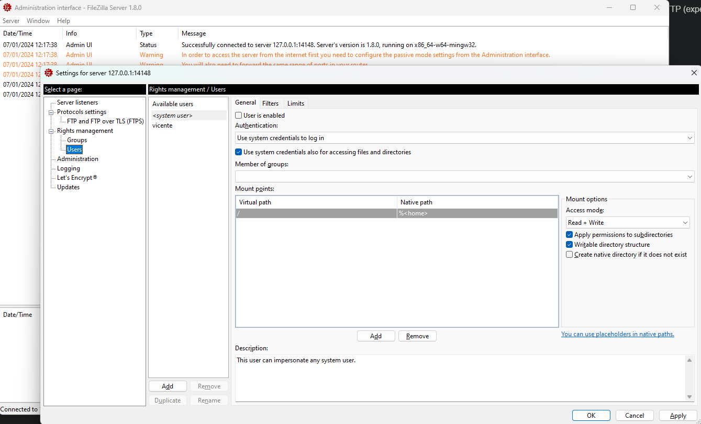

La librería Apache Commons Net™ implementa el lado de muchos protocolos básicos de Internet.
El propósito de la biblioteca es proporcionar acceso a protocolos fundamentales, no abstracciones de alto nivel. Por lo tanto, algunos de los diseños violan los principios de diseño orientado a objetos.
Nuestra filosofía es hacer que la funcionalidad global de un protocolo sea accesible (por ejemplo, TFTP envía archivo y recibe archivo) cuando sea posible, pero también proporcionar acceso a los protocolos fundamentales cuando corresponda para que el programador pueda construir sus propias implementaciones personalizadas (por ejemplo, las clases de paquetes TFTP y los métodos de envío y recepción de paquetes TFTP están expuestos).
Librería Apache Commons NET™
Los protocolos soportados incluyen:
En Java, de forma nativa, es posible realizar transferencias de archivos utilizando este protocolo, pero es extremadamente difícil hacerlo. La librería Apache Commons Net proporciona clases y utilidades para realizar cualquier operación sobre un servidor FTP o FTPS desde un cliente Java.
Esta librería se puede descargar desde la página web de apache.org a través del siguiente enlace: https://commons.apache.org/proper/commons-net/
El servidor FTP es un programa que se ejecuta en un ordenador y permite que otros ordenadores se conecten a él y transfieran archivos utilizando el protocolo FTP.
Para realizar las pruebas vamos a utilizar el servidor FTP FileZilla, que se puede descargar desde la página web de Filezilla.
La instalación es muy sencilla, simplemente hay que seguir los pasos del asistente de instalación. Una vez instalado, tendremos que configurar el servidor, para ello tendremos que abrir el programa FileZilla Server Interface, que estará en el menú de inicio de Windows.

Una vez instalado el servidor, tendremos que configurarlo. Para ello, tendremos que abrir el programa FileZilla Server Interface, que estará en el menú de inicio de Windows y abrir el menú Server y seleccionar la opción "Configure".
A continuación, en la sección Users, tendremos que crear un usuario, para ello tendremos que hacer clic en el botón "Add" y rellenar los campos con los datos del usuario que queremos crear. A continuación, cambiaremos el tipo de autenticación a "Require a password to login" e introduciremos la contraseña que queremos asignar al usuario.
A continuación, en la sección Mounting Points, tendremos que añadir un nuevo punto de montaje, para ello tendremos que hacer clic en el botón "Add" y rellenar los campos con los datos del punto de montaje que queremos crear. En el campo "Native path" tendremos que seleccionar el directorio que queremos compartir.
Rutas Virtuales vs Rutas Nativas
Las rutas virtuales se utilizan para asignar un directorio en el servidor a un directorio virtual. Esto le permite crear una estructura de directorios virtuales que es diferente de la estructura de directorios real en el servidor. Por ejemplo, puede asignar el directorio "C:\Mis Documentos" al directorio virtual "/Documentos". Cuando un cliente se conecta al servidor y cambia al directorio "/Documentos", el cliente estará realmente en el directorio "C:\Mis Documentos" del servidor.
Una vez que hayamos creado el usuario y el punto de montaje, tendremos que hacer clic en el botón "OK" para guardar los cambios.
Las clases y métodos principales del paquete org.apache.commons.net.ftp se muestran a continuación.
public class ApacheFTPClient {
private String server;
private int port;
private String user;
private String password;
private FTPClient ftp;
public ApacheFTPClient(String server, int port, String user, String password) {
this.server = server;
this.port = port;
this.user = user;
this.password = password;
}
void open() throws IOException {
ftp = new FTPClient();
ftp.connect(server, port);
int reply = ftp.getReplyCode();
if (!FTPReply.isPositiveCompletion(reply)) {
ftp.disconnect();
throw new IOException("Exception in connecting to FTP Server");
}
ftp.login(user, password);
}
void close() throws IOException {
ftp.disconnect();
}
public static void main(String[] args) throws IOException {
ApacheFTPClient client = new ApacheFTPClient("localhost", 21, "alumnodam", "psp");
client.open();
client.close();
}
}
En el ejemplo anterior podemos ver cómo conectarnos a un servidor FTP utilizando la librería Apache Commons Net.
En el protocolo FTP, el directorio local es el directorio en el ordenador del cliente y el directorio remoto es el directorio en el servidor. Tanto el directorio local como el remoto se llaman directorios de trabajo y ambos se pueden cambiar con el método changeWorkingDirectory para los archivos remotos y los métodos File para establecer el origen de los archivos locales.
Para mostrar el directorio de trabajo actual, podemos utilizar el método printWorkingDirectory y para mostrar el contenido del directorio de trabajo actual, podemos utilizar el método listFiles o el método listNames.
// Obtener el directorio de trabajo remoto actual
String workingDirectory = ftp.printWorkingDirectory();
// Mostrar el contenido del directorio de trabajo remoto actual
for (String name : ftp.listNames()) {
System.out.println(name);
}
// Cambiar el directorio de trabajo remoto actual
ftp.changeWorkingDirectory(fileName)
Para mostrar el directorio de trabajo local actual, tenemos que gestionarlo con la clase File y sus métodos. También podemos confiar en la clase System y sus métodos como estudiamos en la unidad de gestión de procesos.
// Obtener el directorio de trabajo local actual
String workingDirectory = System.getProperty("user.dir");
// Mostrar el contenido del directorio de trabajo local actual
File file = new File(workingDirectory);
for (String name : file.list()) {
System.out.println(name);
}
// Cambiar el directorio de trabajo local actual
System.setProperty("user.dir", fileName);
En FTP los archivos se pueden cargar de dos formas diferentes:
Modo ASCII: el archivo se carga como texto, con las terminaciones de línea convertidas al estándar de red.
public boolean sendTextFile(String fileName) throws FileNotFoundException, IOException {
ftp.setFileType(FTP.ASCII_FILE_TYPE);
// The getLocalWorkingDirectory() it's a custom method (not from the Apache Commons library)
// that returns the path to the local file we want to upload
File file = new File(getLocalWorkingDirectory() + "/" + fileName);
// The file name in the server can be different from the local file name
String fileRemote = fileName;
InputStream input = new FileInputStream(file);
boolean upload = ftp.storeFile(fileRemote, input);
input.close();
return upload;
}
Modo binario: el archivo se carga tal cual, sin ninguna conversión.
public boolean sendBinaryFile(String fileName) throws IOException {
ftp.setFileType(FTP.BINARY_FILE_TYPE);
// The getLocalWorkingDirectory() it's a custom method (not from the Apache Commons library)
// that returns the path to the local file we want to upload
File file = new File(getLocalWorkingDirectory() + "/" + fileName);
// The file name in the server can be different from the local file name
String fileRemote = fileName;
InputStream input = new FileInputStream(file);
OutputStream output = ftp.storeFileStream(fileRemote);
byte[] bytesIn = new byte[4096];
int read = 0;
while ((read = input.read(bytesIn)) != -1) {
output.write(bytesIn, 0, read);
}
input.close();
output.close();
boolean upload = ftp.completePendingCommand();
return upload;
}
Como con la carga, los archivos se pueden descargar de dos formas diferentes:
Modo ASCII: el archivo se descarga como texto, con las terminaciones de línea convertidas al estándar local.
public boolean getTextFile(String fileName) throws IOException {
ftp.setFileType(FTP.ASCII_FILE_TYPE);
// The getLocalWorkingDirectory() it's a custom method (not from the Apache Commons library)
// that returns the path to the local file we want to download
File file = new File(getLocalWorkingDirectory() + "/" + fileName);
// The file name in the server can be different from the local file name
String fileRemote = fileName;
OutputStream output = new FileOutputStream(file);
boolean download = ftp.retrieveFile(fileRemote, output);
output.close();
return download;
}
Modo binario: el archivo se descarga tal cual, sin ninguna conversión.
public boolean getBinaryFile(String fileName) throws IOException {
ftp.setFileType(FTP.BINARY_FILE_TYPE);
// The getLocalWorkingDirectory() it's a custom method (not from the Apache Commons library)
// that returns the path to the local file we want to download
File file = new File(getLocalWorkingDirectory() + "/" + fileName);
// The file name in the server can be different from the local file name
String fileRemote = fileName;
OutputStream output = new FileOutputStream(file);
InputStream input = ftp.retrieveFileStream(fileRemote);
byte[] bytesIn = new byte[4096];
int read = 0;
while ((read = input.read(bytesIn)) != -1) {
output.write(bytesIn, 0, read);
}
boolean download = ftp.completePendingCommand();
input.close();
output.close();
return download;
}
Otras acciones que se pueden realizar sobre el servidor FTP son:
Mostrar información de los archivos y propiedades de los archivos
public void showFileInfo(String fileName) throws IOException {
FTPFile[] files = ftp.listFiles(fileName);
for (FTPFile file : files) {
System.out.println(file.getName());
System.out.println(file.getTimestamp().getTime());
System.out.println(file.getSize());
if (f.getType() == FTPFile.FILE_TYPE) {
tipo = "File";
}
if (f.getType() == FTPFile.DIRECTORY_TYPE) {
tipo = "Folder";
}
}
}
Añadir y eliminar directorios FTP remotos
public void addRemoteDirectory(String directory) throws IOException {
ftp.makeDirectory(directory);
}
public void removeRemoteDirectory(String directory) throws IOException {
ftp.removeDirectory(directory);
}
Crear y eliminar archivos FTP remotos
public void addRemoteFile(String fileName) throws IOException {
ftp.storeFile(fileName, new ByteArrayInputStream(new byte[0]));
}
public void removeRemoteFile(String fileName) throws IOException {
ftp.deleteFile(fileName);
}
Renombrar archivos y directorios FTP remotos
public void renameRemoteFile(String oldName, String newName) throws IOException {
ftp.rename(oldName, newName);
}